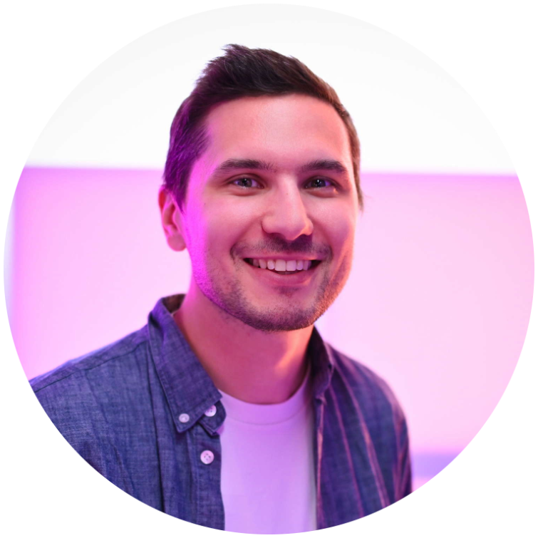

Mettre l'IA au travail chez BackPlan
Deux automatisations concrètes sur Teamleader et votre suivi commercial.
1Pourquoi ce document
Il n'est pas né d'une démarche commerciale, mais d'une conversation de bureau.
On partage le même bureau de coworking à Bordeaux. Marie-Christine a testé Claude sur son propre poste, avec ses vrais dossiers, et on l'a branché ensemble sur sa messagerie. Ce qui suit reprend, à prix fixe et sur un périmètre clair, ce qu'on construirait ensuite avec Teamleader.
2Ce qu'on propose
Une mise en route à prix fixe, sur un périmètre clair. Assez pour trancher sur des faits, assez court pour que personne ne prenne de risque.
Mise en route, 1 000 € HT
Compris
- Deux automatisations construites sur votre métier
- La connexion à Teamleader, en lecture
- Le support par email entre les séances
- Une documentation de reprise qui reste chez vous
- Un point de trente minutes un mois après
Prix ferme, facturation à la commande. Aucune reconduction automatique.
3Par où commencer
Pas sept idées à trier : deux automatisations connectées à ce que vous utilisez déjà, Teamleader et votre messagerie.
La première répond à ce que vous nous avez dit chercher : plus de visibilité sur votre pipe commercial que ce que Teamleader affiche par défaut. Plutôt que de maintenir un fichier à la main, un tableau de bord se met à jour en lisant vos opportunités et vos devis. Vous cadrez ce que vous voulez voir en séance 1, on le construit devant vous.
La seconde se choisit avec Marie-Christine selon ce qui lui sert le plus vite : le brief automatique avant un rendez-vous grand compte, le compte rendu qui met à jour la fiche d'opportunité, ou la revue de pipe du lundi matin.
D'autres automatisations viendront ensuite si celles-là tiennent leurs promesses : lecture d'un cahier des charges, première version d'une réponse commerciale, veille sur les arrêts et les projets industriels du Grand Sud-Ouest.
Le point technique sur Teamleader, pour ceux que ça intéresse
Teamleader Focus ne propose pas de connecteur officiel pour les assistants IA. Ce n'est pas un obstacle : son interface de programmation est publique et documentée, et une intégration privée se déclare en quelques minutes, sans validation de leur part.
Notre parti pris n'est pas de vous demander de faire confiance à du code communautaire, c'est de le confiner. Portées d'accès en lecture seule, identifiants dédiés, révocables depuis votre compte Teamleader en un clic et sans nous. Si le sujet vous déplaît un jour, vous coupez, et rien d'autre ne bouge.
4Vos données
Avec Arkema, ArianeGroup, Merck et DSM Firmenich au portefeuille, la question mérite une réponse avant d'être posée.
- Le périmètre se choisit outil par outil. Rien n'est accessible par défaut.
- Teamleader reste en lecture seule. Claude ne modifie jamais une fiche.
- L'entraînement sur vos échanges se désactive dans les réglages de confidentialité, une bascule qu'on met en place dès le démarrage. Sur un abonnement individuel comme Pro, ce n'est pas le réglage par défaut : c'est nous qui le posons.
5Ce qui vient après, si ça marche
Rien de ce qui suit n'est à décider aujourd'hui. C'est là pour montrer où mène le chemin.
6TRACTR, et la suite
Un studio de produits numériques, fondé à Montréal en 2008, avec un bureau à Bordeaux.
On forme aussi, mais pas en déroulant des slides : on construit avec vous, sur votre métier, et vous repartez avec quelque chose qui tourne. Nos propres offres commerciales, nos comptes rendus et notre suivi de projet passent par les mêmes outils que ceux dont il est question ici, y compris ce document.

La prochaine étape
Guillaume Commagnac
Directeur France, TRACTR
guillaume@tractr.net · 06 99 08 86 32
cal.com/guillaume-tractr